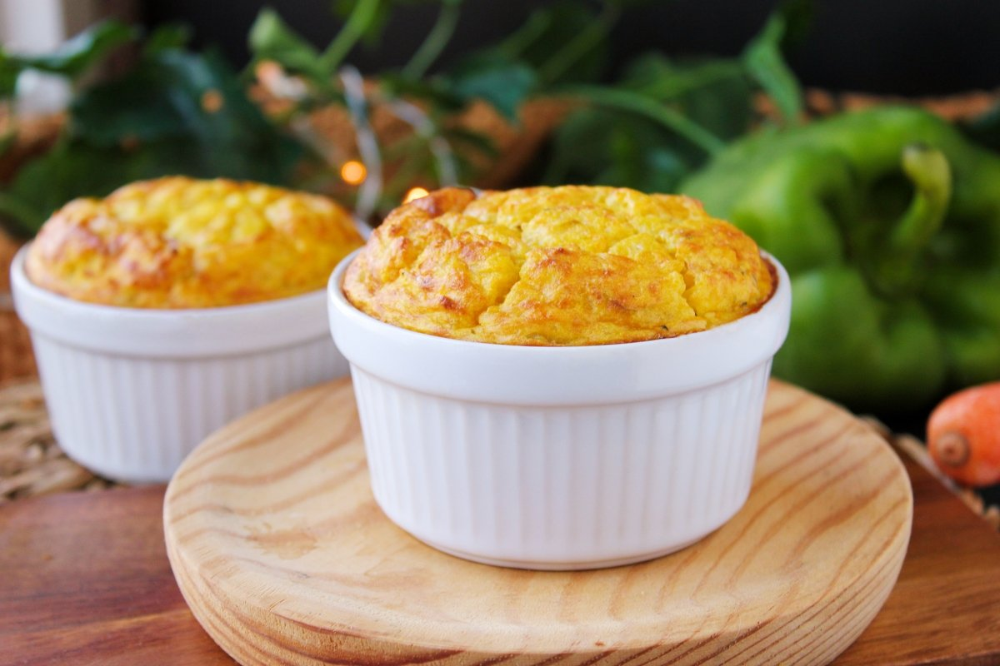
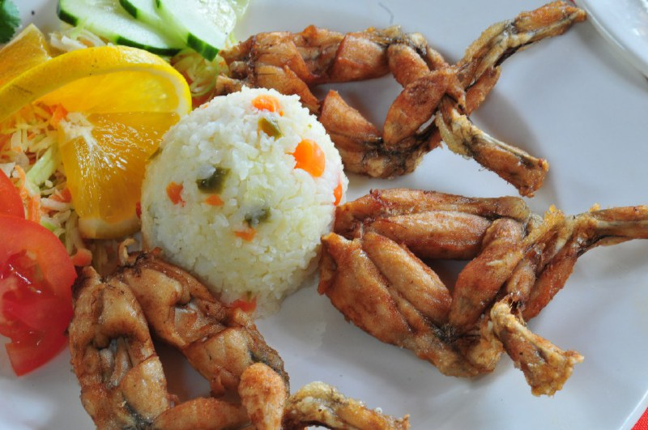

Gastronomía de Francia
RECETA DEL MES FRANCESA
Soufflé

Ingredientes del Soufflé
60g de pimiento rojo asado
60g de queso cheddar o similar
55g de mantequilla
55g de harina
330ml de leche
4 huevos pimienta
Blanca nuez moscada
Sal
Como elaborar el Soufflé
Elaboración. Untamos los moldes con una fina capa de mantequilla y los espolvoreamos con harina. Escurrimos bien el pimiento asado
y lo trituramos. Rallamos el queso cheddar. Separamos las yemas de las claras.
Calentamos la mantequilla en una sartén amplia y, cuando
esté fundida, añadimos la harina. Removemos un par de minutos, dejando que la harina se tueste ligeramente. A continuación agregamos toda
la leche de golpe, una pizca de pimienta, otra de nuez moscada y sal . Mezclamos con unas varillas y cocemos sin dejar de remover diez
minutos.
Agregamos el puré de pimiento y removemos. Retiramos la sartén del fuego y dejamos atemperar unos minutos antes de añadir las
yemas. En un recipiente amplio, hondo y bien limpio batimos las claras con unas varillas, si son eléctricas la tarea será más fácil y
rápida.
Paramos cuando estén bien firmes y al volcar el recipiente las claras se queden en su interior, es decir, cuando hayan alcanzado
el punto de nieve. Agregamos las claras a la sartén, en tres partes. Removiendo después de cada añadido con mucha suavidad y movimientos
envolventes. Rellenamos los moldes con la mezcla, llegando casi hasta arriba. Pasamos la punta de un cuchillo romo por el interior del
borde. Cocemos los suflés en la parte más baja del horno, con calor arriba y abajo a 200 ºC, unos 25 minutos o hasta que estén dorados.
Vídeo "Cómo Hacer Soufflé"
Audio Francia
Algunos platos tipicos de Francia
Ratatouille
La ratatouille, o en occitano ratatolha es una preparación típica de la cocina francesa que consiste en un estofado de diferentes hortalizas típicas del sur de Francia. Proviene de la región de Provenza y del antiguo condado de Niza, por lo que se la llama también ratatouille niçoise.
Ancas de rana

Las ancas de rana se consideran una especialidad culinaria de diversos países entre los que se encuentran Francia, España, China, México, Ecuador, Portugal, y en el noroeste de Grecia, así como en la cocina del medio oeste de Estados Unidos.